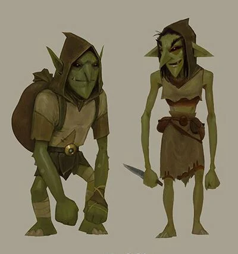
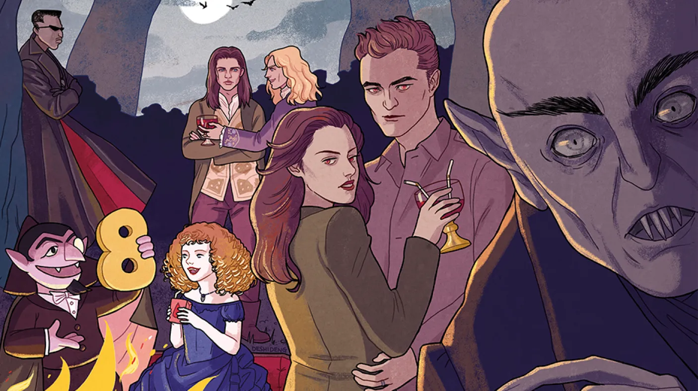

Gallery
Elves
Goblins

Werewolf
vampires

Wizard
Spells

| Supernatural creatures | Definition |
|---|---|
| Elves | Magical creatures associated with nature |
| Goblins | Small creatures that are magical, greedy, and mischievous |
| Werewolf | Human that can shapeshift into a wolf |
| Vampire | Undead human that drinks blood |
| wizard | A person who practices magic |